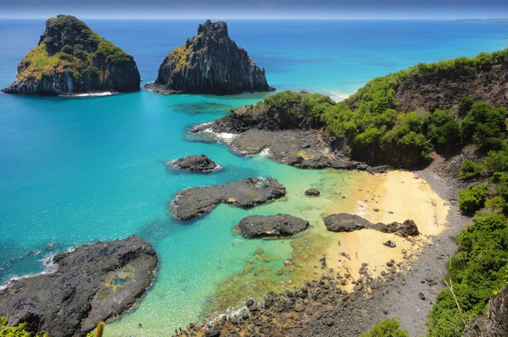

Pontos turísticos de Pernambuco


|
RECIFE | PORTO DE GALINHAS | FERNANDO DE NORONHA |
|---|
Fernando de Noronha

Fernando de Noronha é um dos mais famosos pontos turísticos de Pernambuco e do Brasil.
Afinal, quem nunca sonhou em passear no arquipélago mais bonito do país?
Lá além de curtir a natureza exuberante e as águas cristalinas você ainda pode fazer mergulhos. Então não se esqueça de levar a máscara e o snorkel. Outra dica é levar um lanche e água potável, pois as ilhas não têm estruturas de barracas e bares.
Praia do Cachorro
Dada a localização, é muito provável que a Praia do Cachorro seja a primeira praia de Fernando de Noronha que vai conhecer. Fica situada logo abaixo da Fortaleza dos Remédios, sendo por isso uma praia de fácil acesso a partir da Vila dos Remédios. Ao que parece, o nome vem de uma antiga fonte que tinha a cara de um cão (cachorro) esculpida em bronze. Atualmente, um dos grandes atrativos da Praia do Cachorro é o chamado Buraco do Galego, uma pequena piscina natural circular que se forma na parte rochosa da praia, à direita, e que permite saltos para a água e boas oportunidades fotográficas. Foi a praia de Noronha onde vi mais raias. Em terra, tem um areal pequeno (diminuto na maré alta), com algumas mesas e cadeiras para os veraneantes.